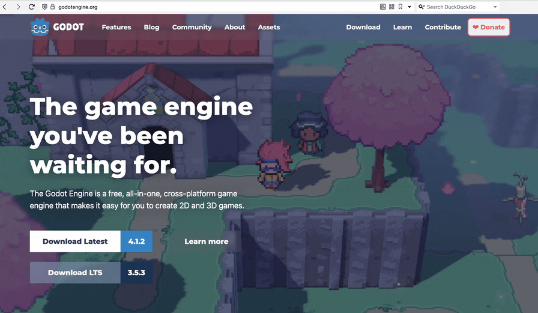
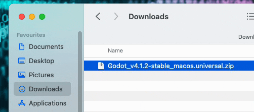
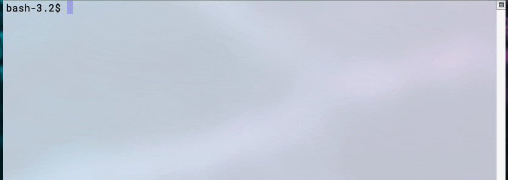

Velg en metode å installere på. OBS! ikke oppdater godot når du er midt i et prosjekt, dette kan føre til ekstra arbeid. Pass også på om du jobber i grupper, at alle har samme version installert.
Gå til https://godotengine.org/ og last ned ønsket version.

Pakk ut .zip filen og dra godot til Applications mappen, evt. om du ikke har fikset admin bruker enda, så kan du også kjøre godot ved å dobbeltklikke på Godot.app

Dersom du har Homebrew installert kan du skrive denne kommandoen i terminalen for å instalere:
brew install godot

Du kan laste ned godot fra Steam: https://store.steampowered.com/app/404790/Godot_Engine/ men dette er ikke anbefalt etter som du har mindre kontroll over når oppdateringer skjer. Godot kan også kjøres direkte i nettleseren: https://editor.godotengine.org/releases/latest/ Dette er bare en preview og er ikke helt stabil, så denne metoden er ikke anbefalt å bruke i et prosjekt.